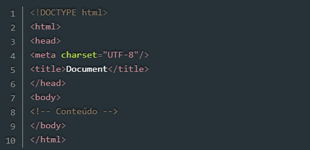
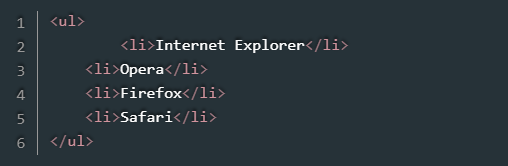
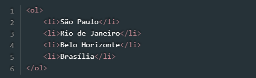

De acordo com os sistemas e ferramentas utilizados, a história da computação está dividida em cinco períodos.
Primeira geração (1946-1959)
Os computadores funcionavam por meio de circuitos e válvulas eletrônicas. Possuíam o uso restrito, além de serem imensos e consumirem muita energia. O computador ENIAC marcou como exemplo da primeira geração.
Segunda geração (1959-1965)
Os computadores da segunda geração funcionavam por meio de transistores, os quais substituíram as válvulas que eram maiores e mais lentas. Nesse período já começam a se espalhar o uso comercial.
Terceira geração (1965-1970)
Os computadores da terceira geração funcionavam por circuitos integrados. Esses substituíram os transistores e já apresentavam uma dimensão menor e maior capacidade de processamento. Foi nesse período que os chips foram criados e a utilização de computadores pessoais começou.
Quarta geração (A partir de 1971)
Com o desenvolvimento da tecnologia da informação, os computadores diminuem de tamanho, aumentam a velocidade e capacidade de processamento de dados. São incluídos os microprocessadores com gasto cada vez menor de energia.
Quinta geração (Dias atuais)
A quinta geração de computadores é composta por todos os dispositivos já criados ou em processo de criação que incorporam tecnologias como inteligência artificial e nanotecnologia A inteligência artificial permite aos computadores reconhecer e aprender a linguagem humana de forma autônoma, sem a intervenção do usuário.
"Clients" são entidades que consomem informações e serviços oferecidos por um servidor. Na programação web são usados navegadores como intermediarios na comunicação entre cliente-servidor, navegadores são programas criados por empresas, utilizados para abrir e executar arquivos
O termo servidor define um recurso dentro de um sistema computacional maior, capaz de processar aplicações, prestar serviços e armazenar dados. Esses sistemas podem ser físicos ou virtuais, estarem instalados local ou remotamente.
Um típico documento escrito em HTML possui três partes: a estrutura principal, o cabeçalho e o corpo.
A estrutura principal deve iniciar com a etiqueta HTML e terminar com a etiqueta /HTML. O cabeçalho, delimitado pelas etiquetas HEAD e /HEAD, destina-se a conter informações sobre o documento - por exemplo, o título do documento (que é construído com o elemento TITLE e aparece no título da janela do navegador). O corpo do documento, delimitado pelas etiquetas BODY e /BODY, destina-se ao conteúdo da página. Veja exemplo:
Lista é um importante recurso de HTML, pois permite criarmos tópicos de textos para uma melhor exemplificação de um determinado assunto.
Listas não ordenadas
listas não numeradas são usadas para listar itens, sem se preocupar com sua sequência. Chamamos de lista de marcadores apenas. As tags usadas para criar uma lista não ordenada são ul e li. A tag ul é usada para definir a lista e a tag li é usada para cada item da lista. Veja exemplo:
Listas ordenadas
As listas ordenadas ou numeradas são usadas para indicar alguma sequência ou numeração As tags usadas para criar uma lista ordenada são ol e li. A tag ol é usada para definir a lista e a tag li é usada para cada item da lista. Veja exemplo:
